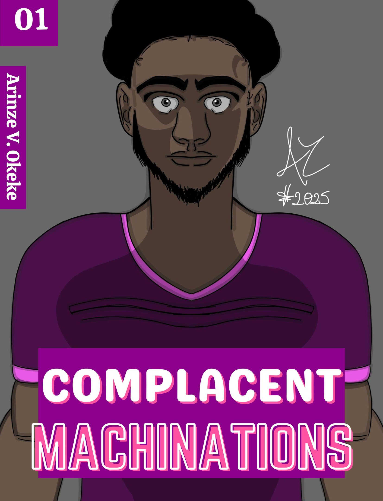

REALISTIC FICTION
A recent graduate of high school? Or maybe a College graduate? Or perhaps a drop out? Regardless of which stage one is at, each person is left to wonder what is next? The story dives into the lives of specific characters with each chapter offering a glimpse on their inner thoughts as they figure out what is next. While at that, life with its unforeseen challenges added discouraging dystopian environment, how can one even begin to live a life they would find to be fulfilling? The more important question posed for each individual is will they remain complacent or take initiative to not only change but consider living a life for Christ? Discover the answers within the pages in this book as Leon the aimless spectator; Victor the man child; Nikolai the gullible soldier; Ethan, the antagonizer; Mortimer an arrogant failed scholar; Charlie, unmotivated silver spooned child; Wyatt the lost sheep; and a few other characters not only navigate the setting but through their actions answer the crucial question.